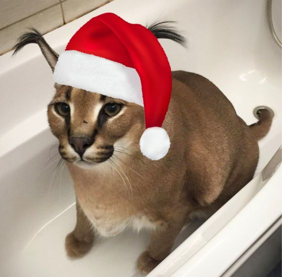
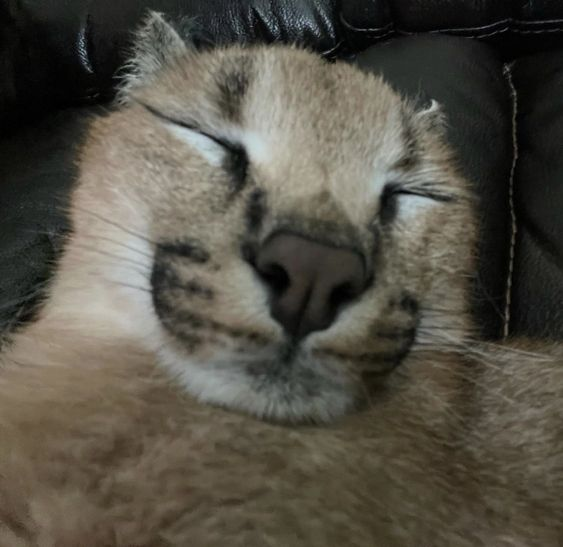
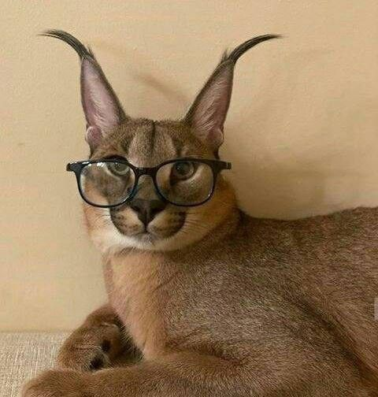
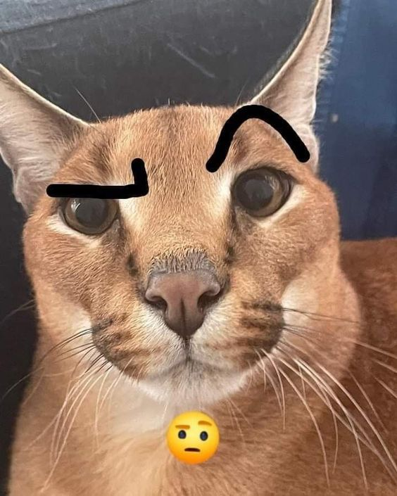

Floppa's real name is Gosha. The meme community uses the name
Floppa, in reference to the caracal's distinctive, large tufted
ears.

Floppa's unique appearance and quirky personality have made him a
beloved internet celebrity, with fans all over the world.

Floppa has inspired a wide range of merchandise, including clothing,
mugs, phone cases, and even plush toys.

Floppa has a very playful personality and loves to chase after toys
and play hide-and-seek with his owner.